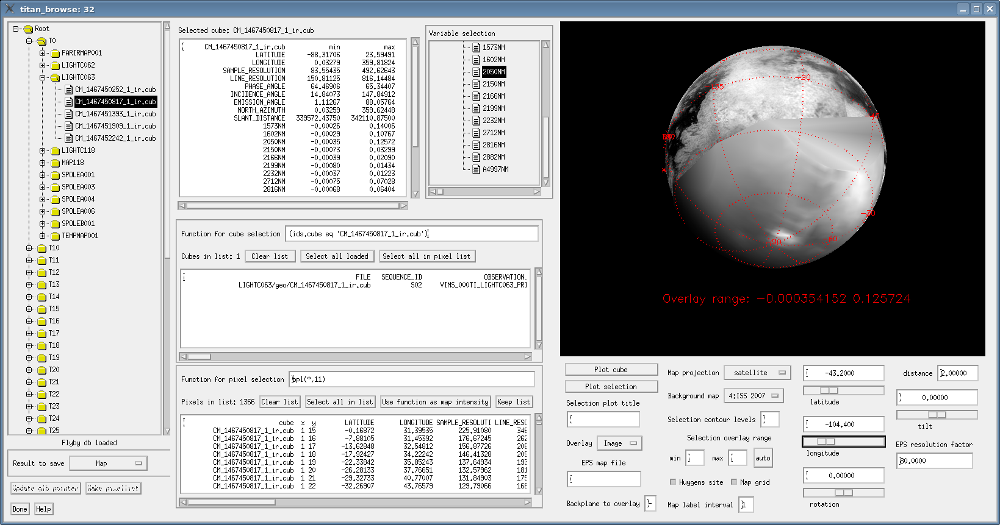

This page was created by the IDL library routine
mk_html_help. For more information on
this routine, refer to the IDL Online Help Navigator
or type:
? mk_html_help
at the IDL command line prompt.
Last modified: Thu Feb 11 17:39:37 2010.
NAME: TITAN_BROWSE PURPOSE: Provides a graphical interface to select and display information from the database files made by flyby_db By default, it will search for database files at ./t*/T*.db.sav.noids, or ./T*.db.sav.noids. CALLING SEQUENCE: It can be called simply by TITAN_BROWSE Provided there are database files to read in the defautl search locations. KEYWORD PARAMETERS: DBLIST: An array of database file names to load. If dblist is not provided, all files matching ./t*/T*.db.sav.noids, or, if none found, matching ./T*.db.sav.noids are used to make it. XSIZE,YSIZE: Change the window size from the default (1600x800) resizing the window with the mouse has no effect, this is the only way to change it. MAPPT,CUBEINFOPT,PLISTPT,CLISTPT,OVERPT,DEBUG: Pointers to the map, cube information text, pixel list, cube list, overlay variable and its coordinates, and to the global strucuture, respectively. The global structure pointer target is only updated at program exit or when the corresponding button is used. It contains or points to all the variables that define the state of the program at one time. MAPIM: Variable to which the map image is returned at the end (causes xmanager to block the command line). CUBE_INFO: Variable to which the cube information is returned at the end (causes xmanager to block the command line). PIXLIST: Variable to which the pixel list is returned at the end (causes xmanager to block the command line). CUBELIST: Variable to which the cube list is returned at the end (causes xmanager to block the command line). OVERLAY: Variable to which the overlay image/pixel locations are returned at the end (causes xmanager to block the command line). RESTRICTIONS: All the database files used at one time must have the same type of contents (number and content of extra backplanes, also do not mix IR and VIS files). The structure of the first file is assumed to be the same for all others If many databases are read at the same time, a lot of memory can be used. For T0 to T35 and 11 extra backplanes, some 2.5GB of memory are used. At least in some cases (observed on Linux x86-64) there was a much higher use of memory if titan_browse is called from a 64-bit IDL session. Starting IDL in 32-bit (with the -32 switch), if avaialable, avoids this inconvenience. In the case above, the 2.5GB were used in 32-bit, which became 3.5GB in 64-bit. If a lot of swap space is being used, exiting the program with the Done button can take a very long time due to the recursive pointer freeing. In those cases, it will be quicker to not close titan_browse, but to exit IDL directly. The help button makes use of IDL calling a html viewer. The browser IDL calls might not be setup by default. In some cases, it may be necessary to set the environment variable IDL_ONLINE_HELP_HTML_BROWSER to the name (not the path or filename) of the browser for IDL to use. The help shown with that button is just this documentation section, in html made by mk_html_help, with a png screen capture. EXAMPLE: To start titan_browse for only the T0 file in the a directory t0 under the current, and obtain an structure with the pixel list, with window size 1000x700: titan_browse,dblist='./t0/T0.db.sav.noids',pixellist=pxl,xsize=1000,ysize=700 The use of the pixellist keyword will cause the command line to remain blocked while titan_browse runs. After having a pixel list, with the updating of pixellist enabled, and exiting titan_browse, pxl will contain a structure like: IDL> help,pxl,/structure ** Structure <1daf858>, 3 tags, length=1583352, data length=1583352, refs=1: PIXFIELDS STRING Array[23] -> the names of the contents of pixfiles, and the 22 (in this case) columns of pixlist PIXFILES STRING Array[15221] -> the file name where each pixel in the list came from PIXLIST FLOAT Array[15221, 22] -> the other columns shown in the pixel list PROCEDURE: Once started, titan_browse's window will contain a flyby tree on the left. This is used for loading and unloading database files for each flyby, and for browsing and selecting individual cubes. A flyby database is loaded by double clicking its name on the tree. Below the tree there is an indicator showing if the currently selected flyby is loaded or not. The files for every flyby can be loaded/unloaded at once by double clicking the root of the tree. This can take several minutes for large numbers of files, so a confirmation box pops up when the root is double clicked. Viewing a cube and making maps: Once one (or more) flyby file is loaded, the cubes in it can be used. Selecting a cube name will replace the contents of the cube information text box. Double clicking a cube name will cause it to be plotted on the map (at the right of the window, OR at the specified EPS file, if any) with the current projection paremeters, and will replace whatever cube selection function with one that can be used to select that single cube. By default the map is made to the window. It can be made to an EPS, by filling the "EPS file name" box. It is necessary to hit enter to have the EPS file name take effect. Any subsequent plots will only be made at that file, overwriting it with no warning, until the file name in the box is blank (and return is pressed, to update it with the blank). Only after blanking the EPS file name the window will get updated again. The field EPS resolution factor determines the bitmap resampling factor for the bitmap part of the EPS maps (the lines and text are made as vectors), and therefore, the EPS file size. The default EPS factor, 80, is a fairly high resolution. Bitmap maps at the screen resolution can be made (png) by using the "Result to save" droplist below the flyby tree. That droplits can also be used to save a text file with the contents of the cube information, cube list or pixel list box. All the map parameters are set by the controls below the map window. Making selections of cubes and pixels by their properties: The database can be searched at the cube and (spatial) pixel level, with the controls in the middle column of the window. The principle, both for selecting cubes or pixels, is to start with a large (cube/pixel) list, and apply functions to filter it, leaving only the (cubes/pixel) for which the function typed in the respective box is true. The parameters that can be used for selection are those listed in the "Variable selection" tree at the top, and are different for selecting cubes or pixels. A selection starts, after one (or more) flyby database is loaded, by filling the (initially empty) cube list with all the cubes of the currently loaded flyby files, with the "Select all loaded" button. Once there are cubes in the list, it can be filtered by typing a logical function in the "Functions for cube selection" box. The function is applyed only when enter is pressed in that box. The variables available for building a logical function for cubes can be browsed in the variable selection tree. They are dividided in keywords and backplanes. Keywords mean mostly (not only) parameters from the cube header, including things like flyby and sequence names, cube shape, exposure times and subsolar, subspacecraft and specular reflection point (SPP) locations. Backplanes mean (for cubes) the range of the values of the usual backplanes in the cube, plus the range of the values of a few selected bands, if there are any selected bands. For titan_browse, those selected bands are the same as backplanes, that is whay those are generically called extra backplanes, or simply backplanes, in this context. Extra backplanes have the name of the band wavelength in nm. If the name starts with an "A", it means the backplane is not a single band, but an average of some bands, centered at the given wavelength. When a variable name is double clicked in the tree, its internal name is typed in the relevant selection function box. The selection is based only on whatever function is in the box. The purpose of the variable tree is simply to know what the internal names of the variables are. As an example, when titan_browse is started the cube selection function comes filled with (ids.NVAL gt 0) This function, if applyed, would select the cubes with >0 valid pixels. It is there to provide a quick way to remove from the list the cubes with no valid pixels in them. For the database files used by titan_browse, a valid pixel is one for which there are valid coordinates in the backplanes of the cube that was used when building the database. As an example, a selection cubes in which the cosines of the maximum of the incidence angles are >0.5, and the maximum of the latitudes is >30 (degrees), can be done with the function (ids.bckrange(5,1) gt 0.5) and (ids.bckrange(0,1) gt 30) (the selection tree shows, by double clicking the in the maximum of latitude, that it internal name is ids.bckrange(0,1)). As all the cube selection variables are part of the structure array called ids by titan_browse, any IDL logical function of the variable ids can be typed for the cube selection. Any cubes for which that function evaluates to true are kept in the current list, the others are removed. The generality of this means that very complex functions can be used, including user defined functions. Defining a function in a .pro file might be convenient for more complex selections, to avoid typing a long one line function in the box, and serving as a record of how the selection was made. But note that if using your own functions, they are only automatically compiled by IDL the first time they are called in the session, therefore they will not automatically recompile if you edit your function after it. Another way to do a complex selection is to do it by parts. There is no limitation on how many times the lists can be filtered further. Once the desired cubes have been selected, a pixel list can be made with the button "Select all in list". this will put in the pixel list every pixel of every cube in the cube list. After there are some pixels in the pixel list, that list can be filtered in the same manner as the cube list, by typing a logical function of the pixel variables in the "Function for pixel selection" box. Again, the variable tree can be used to type in the box the internal name of the desired pixel variable. For pixel selections, only backplane variables are available. This is because keywords and backplane ranges are constant for every pixel in a cube, so selections based on them must be done at the cube level. The pixels are selected with their function in the same manner: the function is evaluated, and only the pixels for which it is true are preserved. As an example, to select pixels with latitudes between 0 and -10: (bpl(*,0) gt -10) and (bpl(*,0) lt 0) As double clicking on pixel latitude on the variable tree types bpl(*,0) in the function box. All pixel variables are internally a part of the structure bpl, so if you define a function in a .pro file to use it in there, it can be made a function of bpl, just as for cubes it could be made a function of ids. For pixels the internal variable names are always a column of the array bpl, while for cubes the variables are always scalar parts of ids, but each ids is an array (each element of ids is a cube). This is because internally the pixel selections are calculated vectorially for each cube at once, and the cube selections are done vectorially for each flyby at once. After applying some pixel selections, it can happen that no pixels remain in some of the cubes that were used to fill the pixel list. The cube list is NOT updated automatically to reflect this. To refresh it, so that only the cubes that have pixels in the pixel list are present, the "Select all in pixel list" button must be used. Note that any changes to the cube list, including this kind of update, automatically clear the pixel list. If a large number of pixels would initially be in the pixel list, just the printing of the text box with the pixel list can consume a lot of time and memory. To avoid this during intermediate steps (for instance, before the pixel list gets filtered to a smaller list which would actually be of interest), there is the "Keep list" button. It enables or disables updating the text in the pixel list box. The list still exists and can be filtered, as indicated by the number of pixels in it, it just is not printed. After the list gets reduced to a more manageable size, that button can be used to turn on again the filling of the text box. Plotting pixel lists: Once there are pixels in the pixel list text box, they can be plotted on the maps. The "plot selection" button will mark on the map the location of all pixels in the pixel list box. There is another possibility, making use of the other purpose of the pixel selection function box. It can be used to type in a (usually real, not logical) function. Once a function is there (do not hit enter, this would cause the function to be used as a filter to the pixel list), use the button "Use function as map intensity". This will plot on the map the values of that function for all the pixels in the pixel list box (either as an image, or as a contour plot). One purpose of this is a simple way to make approximate mosaics. Another is to look at the same thing in differnent cubes while projected to the same geometry, possibly saving the map images to combine them in a multiframe file, to look for temporal variations, for instance. EPS map frames are usually simple to be combined in this way as pages of a pdf, just as the png bitmaps are easy to make into an animated gif. The map in the screen capture image below was made plotting the 2050nm band (the backplane bpl(*,11)) on a satellite projection, on top of the ISS 2007 base map. MODIFICATION HISTORY: Written by: Paulo Penteado, 4/2007 Last change to program 20080521 (added latlab and lonlab controls) Last change to program 20080730 (constrained minimum distance to 1.00001) Last change to documentation 20080521 Screen capture: 
(See titan_browse.pro)